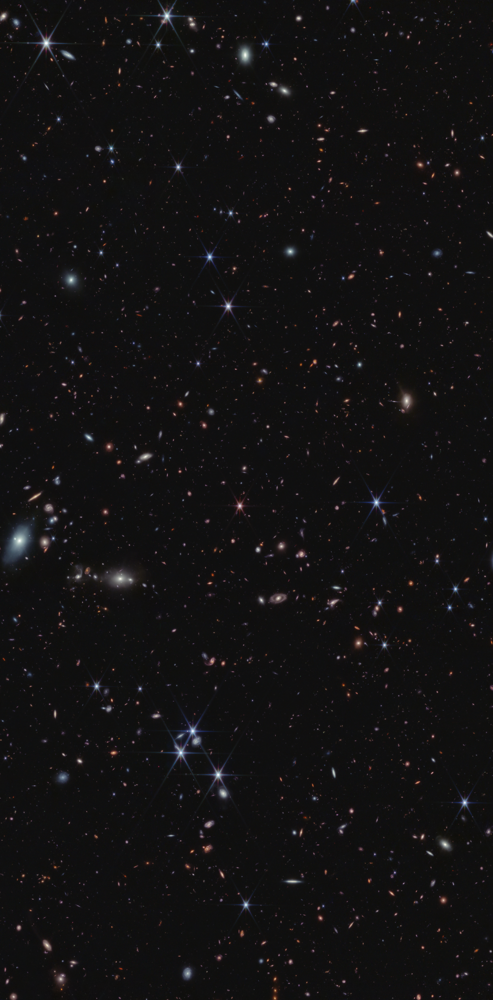

Research Overview
The formation and early growth of galaxies and their supermassive black holes
My main scientific interest lies in the emergence of galaxies in the early
Universe. I am particularly interested in the formation and evolution of supermassive black
holes (SMBHs), which we can observe during phases of active growth (mass accretion), when they
shine as active galactic nuclei. The most luminous AGN, which also host the most massive SMBHs
are historically called quasars.
My group studies AGN and quasars in the first two billion years of the Universe to understand the
processes by which SMBHs form, how they grow to their observed masses and how they influence the evolution of their host galaxies.
The first massive SMBHs are believed to reside in the most overdense regions of the Cosmic Web and observations of these environments allow us to test large-scale structure formation models.
Furthermore, quasars serve as bright beacons to study hydrogen reionization, the last major phase transition of the Universe, in absorption.
Recent Press Highlights
- Euclid discovers the oldest quasars in the universe (ESA press release)
- Mysterious cosmic 'dots' are baffling astronomers. What are they? (Nature News)
- Entdeckung eines neuen Little Red Dots in einer sehr massereichen Umgebung (UHH/MIN)
Recent Group Publications (last 2 years)

The search for the most distant quasars
Pushing the quasar redshift frontier to a few hundred million years after the Big Bang
provides a unique window intow the emergence of galaxies, the early growth of
supermassive black holes, and the reionisation history of the Universe.
My group uses wide-area photometric surveys (e.g., Euclid) in concert with modern
data machine-learning strategies for a highly efficient quasar selection. Learn more
about our involvement in the Euclid Consortiums QSO work package and our
record breaking discoveries at the link below.
You want to learn more? Click here:
Quasar Discovery

High-redshift Quasars
Distant quasars are ideal probes of the formation of cosmic structures, the evolution
of the intergalactic medium and the early growth of SMBHs and their host galaxies.
My group conducts multi-wavelength follow-up observations to constrain the demographics
of the quasar population and their relation to cosmic structure formation, to understand quasar feedback
processes and the co-evolution with the quasar host galaxy, and whether quasars drive hydrogen reionisation
and if so how.
You want to learn more? Click here:
High-redshift Quasars

Deciphering the Cosmic Dawn with JWST
The James Webb Space Telescope (JWST) is revolutionizing our view of the high-redshift
Universe. Especially, its near-infrared spectroscopic capabilities enable us to map and study
far distant galaxies and lower luminosity AGN.
First identified with JWST, "Little Red Dots" — compact, red sources with broad emission lines —
present a new class of puzzling objects that possibly host nascent accreting supermassive black holes.
However, we still do not understand their true nature and how they relate to the general AGN population.
With the COSMOS-3D JWST treasury program and my group's follow-up observations, we aim to characterize
the populations of galaxies and AGN in the epoch of reionisation and shed light on the nature of Little Red Dots.
You want to learn more? Click here:
JWST and the Cosmic Dawn
Machine learning in Astrophysics
Modern astronomical surveys produce vast amounts of data, which require new analysis techniques to fully exploit
their scientific potential.
My group develops new machine learning strategies for supervised and self-/unsupervised discovery,
generative models to augment training data, and anomaly detection to identify rare objects in large astronomical datasets.
You want to learn more? Click here:
Machine Learning in Astrophysics